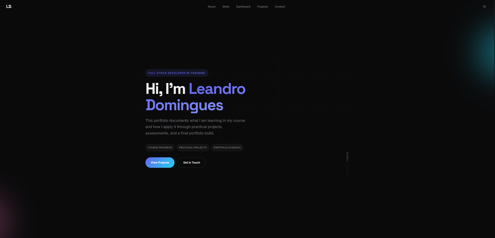
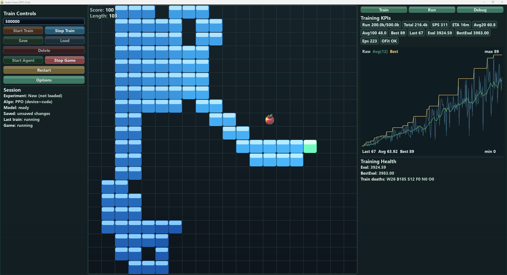

Introduction to Development
HTML
CSS 3
JavaScript
Python
Full-Stack Developer in Training
This portfolio presents the skills I am developing through my course and self-taught project work.
Programme Outline
The planned course path starts with core development foundations and moves into a broader full-stack stack with assessment and project work.
About

I am based in Torquay, UK and currently completing a full-stack development traineeship. This portfolio clearly distinguishes planned course work from self-taught project work.
My progression will move from core foundations into full-stack delivery: front-end development, databases, APIs, two practical projects, and the final portfolio website.
Note: Course milestones are planned; personal projects show proactive preparation.
Skills
This split keeps planned course technologies separate from the tools and workflows I am already using in self-directed projects.
Journey
The course structure is straightforward: learn the foundations, deepen full-stack knowledge, complete practical work, and present the results professionally.
Build core coding foundations with HTML, CSS, JavaScript, and Python through guided lessons and quizzes.
Deepen full-stack knowledge across front-end and back-end technologies, then validate understanding in an internal exam.
Apply learning to practical builds that simulate real software development problems and workflows.
Present projects, skills, and progression in a professional portfolio suitable for employers and course assessment.
Project Dashboard
The dashboard gives a quick view of current progress across planned course milestones and self-taught project work.
Projects
Course milestones show the formal structure I am working toward. The self-taught projects show how I am already applying technical ideas in practice.
Planned foundation stage covering HTML, CSS, JavaScript, and Python through guided lessons, quizzes, and practical exercises.
Planned full-stack phase focused on deeper front-end and back-end skills, followed by an internal exam to validate understanding.
Planned course practical: first full implementation project to validate front-end, API, and persistence fundamentals in one deliverable.
Planned course practical: follow-up build focused on stronger architecture, testing flow, and evidence-ready documentation for final assessment.

Final course milestone in progress. This site is being built proactively as the evidence hub for future course projects and assessments.
Completed personal reinforcement-learning lab where a Q-learning agent learns to solve maze levels with training telemetry and evaluation exports.

In-progress personal RL project with PPO and controller arbitration, plus dashboard tooling for repeatable training and result analysis.

Independent C++/SFML work that layers prop-based mutation, nutrient diffusion, and species competition on a Game of Life core. Real-time controls, zoom, and data overlays let me explore simulation tuning and visual storytelling.

Local productivity tracker with AI coaching built across .NET desktop + CLI and a Python coach runtime. Uses SQLite, WebView2, multi-model LLM routing, PowerShell automation, snapshot contracts, and CI quality gates.
Contact
I am open to feedback, internship opportunities, and collaboration. Feel free to contact me about projects or course-related opportunities.